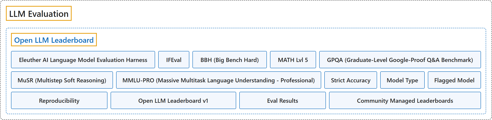

Open LLM Leaderboard
Classification

Glossary
| Term | Definition | 中文翻译 | Source |
|---|---|---|---|
| Open LLM Leaderboard Open LLM Leaderboard |
(Summary) A project curated by the Hugging Face team to evaluate and rank open LLMs and chatbots with reproducible scores; the documentation now describes it in the past tense. | （概述）一个由 Hugging Face 团队主持的项目，评测并排名开放的 LLM 和聊天机器人，给出可复现的分数；文档现在用过去时描述它。 | Hugging Face, n.d.-b, "Leaderboards and Evaluations" |
| Eleuther AI Language Model Evaluation Harness Eleuther AI 语言模型评测工具 |
(Summary) The unified framework for testing generative language models on many evaluation tasks, with which the leaderboard ran its six benchmarks. | （概述）在大量评测任务上测试生成式语言模型的统一框架，排行榜用它运行六项基准。 | Hugging Face, n.d.-a, "Tasks" |
| IFEval IFEval |
(Summary) A dataset that tests whether a model follows explicit instructions such as including a keyword or using a format, scoring adherence to the instructions rather than the content. | （概述）一个数据集，检验模型是否遵守明确的指令，如包含某个关键词或使用某种格式，评的是对指令的遵守而不是内容。 | Hugging Face, n.d.-a, "Tasks" |
| BBH (Big Bench Hard) BBH（BIG-Bench 困难子集） |
(Summary) A subset of 23 hard tasks from BIG-Bench, among them multistep arithmetic, algorithmic reasoning, language understanding and world knowledge. | （概述）取自 BIG-Bench 的 23 项难题子集，包括多步算术、算法推理、语言理解和世界知识。 | Hugging Face, n.d.-a, "Tasks" |
| MATH Lvl 5 MATH 第 5 级 |
(Summary) The level 5 questions only of MATH, a set of high-school competition problems whose answers must follow a strict output format. | （概述）MATH 中只取第 5 级的题目；MATH 是一套高中竞赛题，答案必须符合严格的输出格式。 | Hugging Face, n.d.-a, "Tasks" |
| GPQA (Graduate-Level Google-Proof Q&A Benchmark) GPQA（研究生水平防搜索问答基准） |
(Summary) A very hard knowledge set written by PhD-level experts in biology, physics and chemistry, gated to limit contamination, so the documentation shows no examples. | （概述）由生物、物理、化学博士级专家编写的高难度知识题集，设访问限制以减少污染，所以文档不展示示例。 | Hugging Face, n.d.-a, "Tasks" |
| MuSR (Multistep Soft Reasoning) MuSR（多步软推理） |
(Summary) Algorithmically generated problems of about 1,000 words (murder mysteries, object placement, team allocation) that need reasoning over long context. | （概述）算法生成、每题约 1000 词的问题（谋杀悬案、物品摆放、团队分配），需要在长上下文上推理。 | Hugging Face, n.d.-a, "Tasks" |
| MMLU-PRO (Massive Multitask Language Understanding - Professional) MMLU-Pro（大规模多任务语言理解专业版） |
(Summary) A refined MMLU with ten answer choices instead of four, more reasoning questions and expert review to reduce noise. | （概述）改进版 MMLU，选项从四个增到十个，推理题更多，并经专家审核以减少噪声。 | Hugging Face, n.d.-a, "Tasks" |
| Strict Accuracy 严格准确率 |
(Summary) The IFEval measure, reported at the instance level and the prompt level, run 0-shot. | （概述）IFEval 的度量，分别按实例级和提示级报告，零样本运行。 | Hugging Face, n.d.-a, "Task Evaluations and Parameters" |
| Model Type 模型类型 |
(Summary) The leaderboard's five kinds of model: pretrained, continuously pretrained, fine-tuned on domain data, chat models, and merges. | （概述）排行榜划分的五类模型：预训练、持续预训练、在领域数据上微调、聊天模型，以及合并模型。 | Hugging Face, n.d.-a, "Model Types" |
| Flagged Model 被标记模型 |
(Summary) A model whose name carries "Flagged" because the community flagged it; the documentation says it should probably be ignored. | （概述）名称带 "Flagged" 的模型，因为社区标记了它；文档说它大概应当忽略。 | Hugging Face, n.d.-a, "Results" |
| Reproducibility 可复现性 |
(Summary) Results can be reproduced with Hugging Face's fork of the evaluation harness, though they vary slightly with batch size because of padding. | （概述）结果可用 Hugging Face 分叉的评测工具复现，但由于填充，结果会随批大小略有不同。 | Hugging Face, n.d.-a, "Reproducibility" |
| Open LLM Leaderboard v1 Open LLM Leaderboard 第一版 |
(Summary) The first version, which evaluated models on six benchmarks in the same setup and was archived in June 2024 when a newer version replaced it. | （概述）第一版，以同一设置在六项基准上评测模型，2024 年 6 月被新版本取代时归档。 | Hugging Face, n.d.-c, "Open LLM Leaderboard v1" |
| Eval Results 评测结果 |
(Summary) One of the Hub's three kinds of leaderboard: scores on official benchmark datasets such as GPQA or MMLU-Pro, shown on the model page when published in the model's repository. | （概述）Hub 三类排行榜之一：在 GPQA、MMLU-Pro 等官方基准数据集上的分数，发布在模型仓库里时显示在模型页面上。 | Hugging Face, n.d.-b, "Leaderboards and Evaluations" |
| Community Managed Leaderboards 社区管理的排行榜 |
(Summary) One of the Hub's three kinds of leaderboard: boards that live on Spaces and are run by the community for particular use cases. | （概述）Hub 三类排行榜之一：放在 Spaces 上、由社区维护、针对特定用例的榜单。 | Hugging Face, n.d.-b, "Leaderboards and Evaluations" |
References
Hugging Face. (n.d.-a). About. In Leaderboards documentation. Retrieved November 10, 2026, from https://huggingface.co/docs/leaderboards/open_llm_leaderboard/about
Hugging Face. (n.d.-b). Leaderboards and evaluations. In Leaderboards documentation. Retrieved November 10, 2026, from https://huggingface.co/docs/leaderboards/index
Hugging Face. (n.d.-c). Open LLM Leaderboard v1. In Leaderboards documentation. Retrieved November 10, 2026, from https://huggingface.co/docs/leaderboards/open_llm_leaderboard/archive